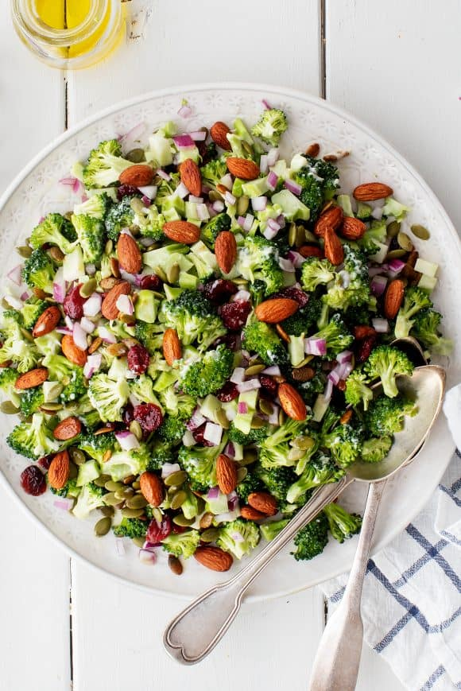

Salad

Description
roccoli salad is a classic summer cookout dish, but the traditional recipe is loaded up with sugar, ample mayo, bacon, and cheese. My recipe is a fresher, healthier version – I nix the sugar, meat, and cheese altogether – and the result is a crisp, refreshing, tangy dish that’ll be the star of your cookouts all summer long!
Ingredients
- 1 pound broccoli crowns
- 3 tablespoons extra-virgin olive oil
- 3 tablespoons mayo, I like Sir Kensington's or vegan mayo
- 1½ tablespoons apple cider vinegar
- 2 teaspoons Dijon mustard
- 1 teaspoon maple syrup or honey
- 1 garlic clove, minced
- ¼ teaspoon sea salt, more to taste
- ⅓ cup diced red onions
- ⅓ cup dried cranberries
Steps
- Preheat the oven to 350°F and line a baking sheet with parchment paper.
- Chop the broccoli florets into ½-inch pieces and any remaining stems into ¼-inch dice. Peel any woody or course parts from the stem first.
- In the bottom of a large bowl, whisk together the olive oil, mayo, apple cider vinegar, mustard, maple syrup, garlic, and salt. Add the broccoli, onions, and cranberries and toss to coat.
- Place the almonds and pepitas on the baking sheet, toss with the tamari, maple syrup, and smoked paprika and spread into a thin layer. Bake 10 to 14 minutes or until golden brown. Remove from the oven and let cool for 5 minutes (they’ll get crispier as they sit).
- Toss the almonds and pepitas into the salad, reserving a few to sprinkle on top. Season to taste and serve